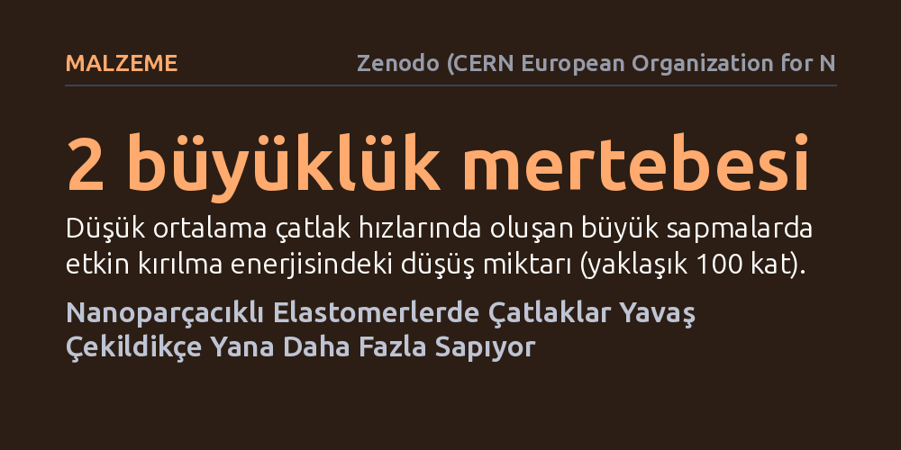

MALZEME · Zenodo (CERN European Organization for Nuclear Research) · 2026-10-16
Araştırmacılar, nanoparçacık katkılı kauçuksu malzemelerde çatlakların yayılma davranışını ve çekme hızının çatlak yoluna etkisini inceledi. Yaygın kabulün aksine, çatlakların yana doğru sapma kararsızlığının yüksek hızlarda değil, çekme hızı azaldıkça belirgin şekilde arttığı bulundu.
Katılarda çatlak sapmalarının sadece yüksek hızlarda oluştuğu yönündeki klasik kabulü sarsarak, yavaş çekme altında malzemelerin çok daha düşük kırılma enerjileriyle kırılabileceğini gösteriyor.

Katı malzemelerin nasıl kırıldığı ve çatlakların nasıl ilerlediği, mühendislik yapılarından günlük tüketim ürünlerine kadar dayanıklılığın temel belirleyicisidir. Malzeme mekaniğindeki klasik kabul, çatlakların düz bir hat dışına taşarak yana sapmasının veya kararsız yollar izlemesinin genellikle çok yüksek yayılma hızlarında, neredeyse ses hızına yaklaşan dinamik kırılmalarda ortaya çıktığını öngörür. Ancak kauçuk benzeri esnek polimerlerin içine nanoparçacıklar eklendiğinde bu temel kuralın geçerliliğini koruyup korumadığı uzun süredir yanıt bekleyen bir soruydu.
Nanoparçacık katkılı elastomerler; araç lastiklerinden sızdırmazlık contalarına, esnek elektroniklerden biyomedikal araçlara kadar mekanik dayanıklılığı artırmak amacıyla yaygın biçimde kullanılıyor. Eğer bu malzemeler beklenmedik koşullarda, özellikle de yavaş deformasyonlarda kararsızlık gösteriyorsa, mevcut güvenlik paylarının ve malzeme tasarım modellerinin yeniden gözden geçirilmesi gerekir. Araştırmacılar bu nedenle, malzemenin yavaş çekilmesi durumunda çatlak davranışının ve ilerleme yönünün nasıl değiştiğini incelemeye odaklandı.
Çalışmada araştırmacılar, farklı oranlarda nanoparçacık içeren elastomer numuneler hazırlayarak kontrollü mekanik çekme deneyleri gerçekleştirdi. Deney düzeneğinde numuneler farklı çekme hızlarında gerildi; bu sırada çatlağın başladığı andan itibaren izlediği yol, yana doğru yaptığı sapmaların genliği ve çatlağın ortalama ilerleme hızı hassas biçimde kaydedildi.
Deneyler sırasında sadece çatlak doğrultusu değil, aynı zamanda malzemenin yırtılması için harcanan etkin kırılma enerjisi de hesaplandı. Nanoparçacık katkı oranının çatlak geometrisi üzerindeki etkisini belirlemek için farklı dolgu kesirleri test edildi ve elde edilen mekanik tepkiler teorik kırılma kinetiği modelleriyle kıyaslandı.
Deney sonuçları, katı mekaniğindeki yaygın beklentinin tam aksini ortaya koydu. Çatlak yolunun doğrusal hattan yana doğru sapması, yüksek çekme hızlarında neredeyse tamamen kaybolurken, çekme hızı azaldıkça belirgin biçimde şiddetlendi. Yazarlar bu durumu "çatlak yolu kararsızlığının yavaş yüklemeyle büyümesi" olarak belgeliyor.
Sayısal analizler, yana sapma genliğinin çekme hızı arttıkça logaritmik olarak azaldığını ve malzeme içindeki dolgu oranının kareköküyle orantılı olarak büyüdüğünü gösterdi. Dahası, düşük ortalama çatlak hızlarında gelişen bu büyük sapmalara, standart duruma göre iki büyüklük mertebesine (yaklaşık yüz kata) kadar daha düşük etkin kırılma enerjileri eşlik etti.
Bu bulgular, malzemedeki yırtılmanın kritik altı kopma kinetiğiyle uyumlu olduğunu ve çatlağın yana sapma miktarının malzemenin elasto-yapışma uzunluğu ile sınırlandığını düşündürüyor. Başka bir deyişle, nanoparçacıklı kauçuk malzemeler çok yavaş çekildiklerinde, beklenenden çok daha az enerji harcayarak yollarından sapabiliyor ve öngörülmeyen yırtılma desenleri oluşturabiliyor.
Bu sonuç, lastik sırtları ve endüstriyel contalar gibi sürekli yavaş veya statik gerilime maruz kalan esnek malzemelerin yorulma ve yırtılma ömrünü yeniden hesaplamayı gerektirebilir. Bununla birlikte, çalışmanın henüz hakem denetiminden geçmemiş bir önbaskı olduğunu ve farklı polimer matrislerinde bağımsız deneylerle doğrulanması gerektiğini akılda tutmak gerekir.